Caso 013 · Alejandro Soffia + Gabriel Rudolphy · 2014 · hospedaje (hostal)
Consigna B (lectura diagramática). Del boceto tomo relaciones, no forma: el cono es la mirada al mar, la flecha vertical es el ascenso por la pendiente (acceso y circulación) y el polígono es una masa que se asienta en la ladera. Resultado: un edificio de dos niveles que se escalona con el terreno. El nivel alto (camino) es la cocina-comedor-sala, las dos habitaciones familiares y la lavandería. Bajo la terraza del comedor hay dos habitaciones, tomadas del terreno. La terraza es la cubierta de las habitaciones bajas y el espacio común mira al mar. Escalera exterior y terrazas forman un recorrido continuo desde el camino hasta el mar.
Hipótesis de orientación (el encargo no la da): el mar queda al oeste (-y del modelo) y el camino al norte. Hemisferio sur: el sol viene del norte y las fachadas al mar reciben sol de tarde.
Csb: verano fresco, oscilación moderada, humedad alta, viento S-SO fuerte por la tarde. Estrategia: masa media (bloque), ventilación cruzada mar-fondo con ventanas altas al norte del volumen, aleros de 1,4 m y pérgola contra el sol de tarde, extremo este cerrado contra el viento. Programa por actividades: dormir (4 habitaciones: 2 de 4 pers. y 2 de 3 pers., 14 plazas; para grupos y familias), cocinar-comer-estar (una sola sala de 60 m², polivalente, mejor que cocina y salón separados por coste), lavar sábanas (lavandería y servicio 9,7 m²), estar al aire libre (terrazas 100 m²). Escojo 4 habitaciones y no 6 para mantener 195 m² construidos dentro del rango 140-230 m² y el presupuesto.
| 1. Pastilla escalonada en 2 niveles (elegido) | 2. Tres terrazas en cascada con escalera central | |
|---|---|---|
| Parcela (12 m de fondo) | Ocupa 34 x 9 m, cabe | Cada terraza 3 m, queda estrecha |
| Programa | Común con vista y terraza amplia | Común arriba, sin terraza útil |
| Clima | Cubiertas únicas, terraza abrigada | Tres cubiertas, más viento |
| Vistas y accesos | Todas las habitaciones al mar; acceso desde el camino | Habitaciones bajas con vista tapada |
| Coste | Bajo: dos cajas | Tres niveles, más muro de contención |
Se elige el 1.
Camino -> vestíbulo (4,7 m²) -> sala común (60 m²) con lavandería a un lado. Las habitaciones 1-2 se abren a la terraza este. La escalera exterior, en zanja, baja al distribuidor de las habitaciones 3-4. La terraza al mar (66 m²) cubre las habitaciones bajas.
| Exigido | Propuesto | Cumple |
|---|---|---|
| Situación (U01) | U01 | Sí |
| Plantas | P01-P03 (inferior, superior, cubierta) | Sí |
| Secciones | S01 longitudinal, S02 transversal | Sí |
| Alzados | S03 (oeste/mar y norte/camino) | Sí |
| Detalle constructivo | D01 a 1:20 | Sí |
| Habitaciones con baño, nº a definir | 4, cada una con baño propio (~3,8 m²) | Sí |
| Habitaciones para grupos y familias | 2 de 4 y 2 de 3 pers. | Sí |
| Espacio común cocina-comedor-sala, 1 | 1 de 60 m² | Sí |
| Lavandería y servicio | 9,7 m² | Sí |
| Terrazas con vista al mar | 66 m² + 35 m² | Sí |
| Superficie 140-230 m² | ~195 m² | Sí |
| Presupuesto 600-650 USD/m² | ~195 m² x 625 = ~122 000 USD; sin materiales costosos | Sí, estimado |
| Normativa (ocupación, retranqueos) | Valores no constan; retranqueos 0,4-0,8 m; ocupación ~25 % | Sin datos |
| Acceso rodado y peatonal desde camino en extremo | Acceso peatonal por el extremo norte, aparcamiento común fuera | Sí |
| Edificación existente | No hay: todo nuevo | n/a |
Muros portantes de bloque de 20 cm cada 4-6 m, tabiques de bloque de 10-12 cm. Nivel bajo con muros de hormigón de 30 cm (contención al fondo). Forjado de hormigón de 20-30 cm: luces 4-6 m, canto 25 cm, predimensionado h = L/20. Terraza este sobre muro de piedra local. Cubierta de chapa grecada con cabios de madera 6x15 cm a 60 cm, luz 5,7 m, pendiente 12 %. Cimentación corrida, zapatas de 0,6 m bajo muros. Carpintería de madera, pérgola de madera. Todo ejecutable por constructores locales.
D01: solera de hormigón sobre grava, muro de bloque enlucido por ambos lados, cubierta de chapa, rastreles, cabios, aislante y tablero.
Agua caliente solar sobre la cubierta, saneamiento con fosa séptica en el límite oeste (sin red); ventilación de baños inferiores por conducto. Lluvia: canalones al vaso de infiltración bajo la terraza, drenaje de la zanja de escalera. Accesibilidad: el nivel superior es accesible desde el camino (habitaciones 1-2 y sala); las habitaciones 3-4 solo por escalera (desviación: pequeña escala, sin ascensor por presupuesto). Evacuación: distribuidor inferior en fondo de saco de 13,5 m con salida única por la escalera exterior (desviación, a verificar con la normativa local); nivel superior con salidas directas a terraza.
Los avisos de ocupación de las láminas se deben a que el modelo incluye el terreno circundante; los textos están sin solapes salvo una cota «A»/«4,00».
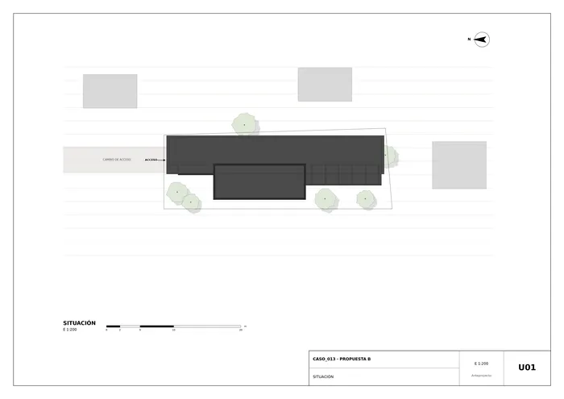
U01 · Situación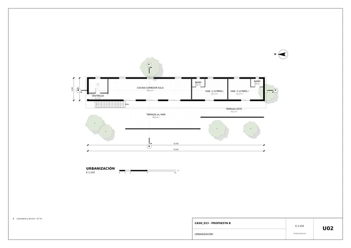
U02 · Urbanización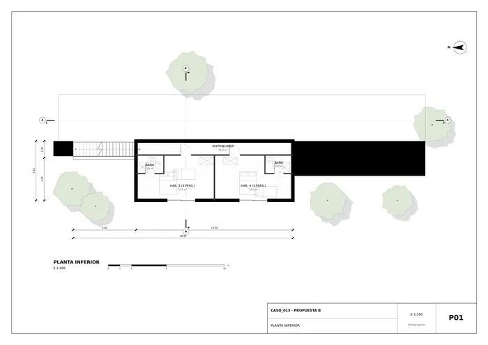
P01 · Planta inferior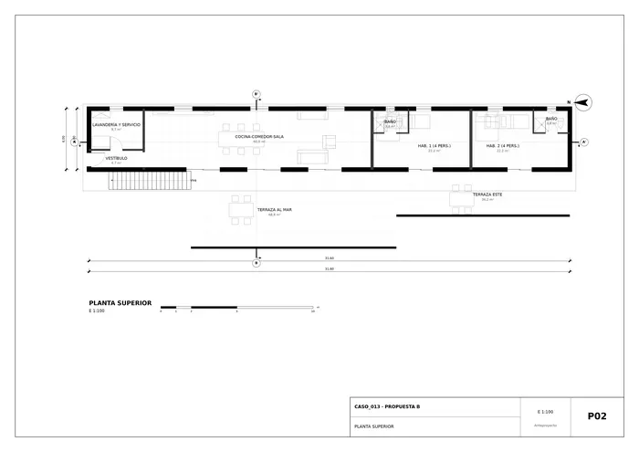
P02 · Planta superior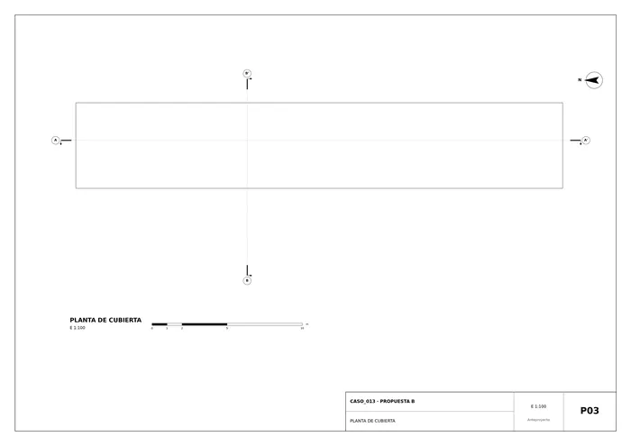
P03 · Planta de cubierta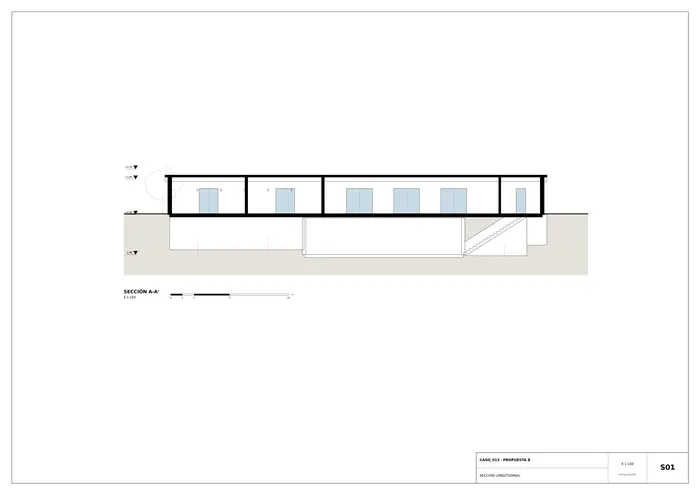
S01 · Sección longitudinal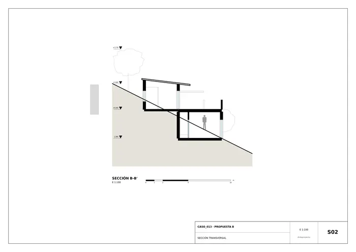
S02 · Sección transversal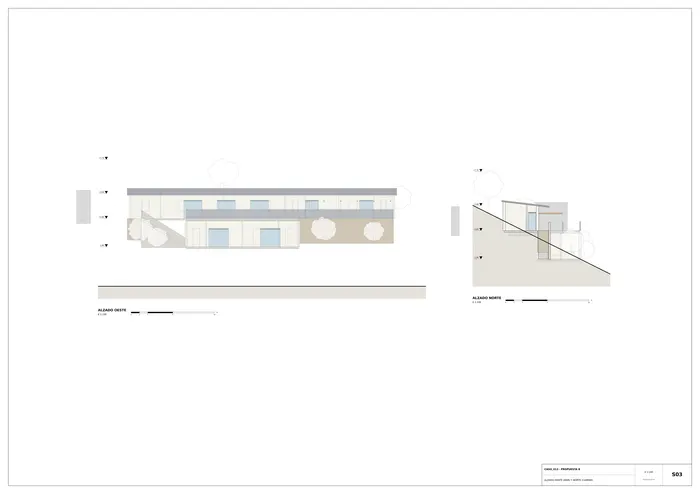
S03 · Alzado oeste (mar) y norte (camino)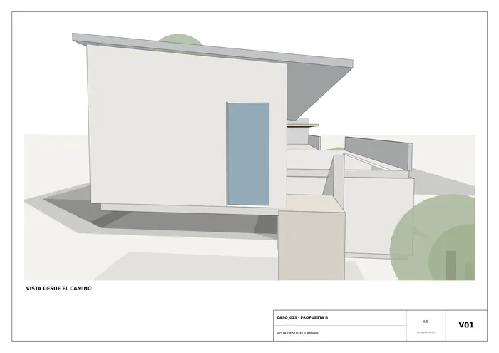
V01 · Vista desde el camino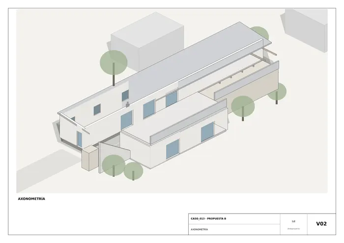
V02 · Axonometría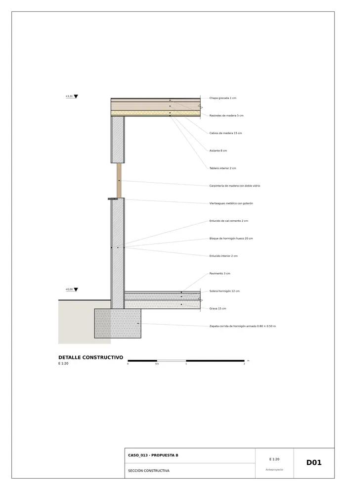
D01 · Sección constructivaMemoria de la propuesta tal como la entregó el sistema. Se han omitido las notas internas del proceso (revisiones, control de reconocimiento y referencias a archivos de trabajo).